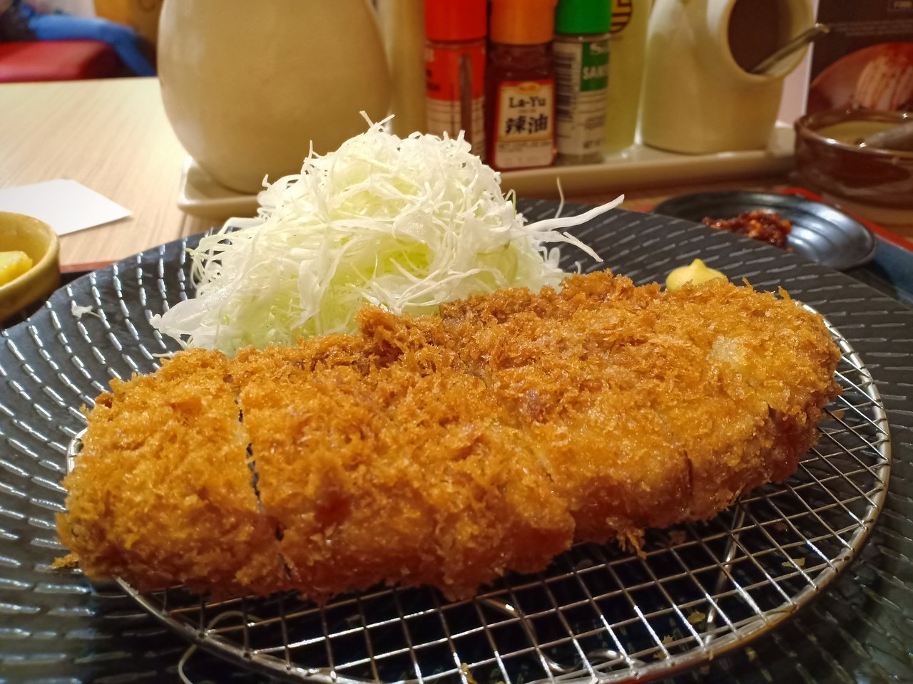

Home
Tonkatsu

Description
Tonkatsu is a Japanese dish that is inspired from a Western cuisine. It is a tender pork loin that is coated in Japanese panko breadcrumbs
making it crispy. The word Japanese word ton comes from "pork", while katsu derives from the word "cutlet". The dish is
simple and easy to prepare.
Ingredients
- Pork Loin or Pork Tenderloin Fillet
- Large Egga
- All-purpose Flour
- Panko Breadcrumbs
- Salt and Pepper
- Shredded Cabbage
- Cooking Oil
Steps
- Trim the excess fat, cut connectice tissues, and pound the meat with a meat mallet, then rub salt and pepper to season.
- Set up the breading station consists of the flour, beaten eggs, and panko breadcrumbs, and heat the oil in a deep pot or frying pan.
- Coat the meat in flour and dip in the beaten eggs mixture, then coat in panko breadcrumbs.
- Fry one side of the meat in hot oil until golden brown then flip to fry the other side.
- Slice the meat then serve with shredded cabbage or a sauce.